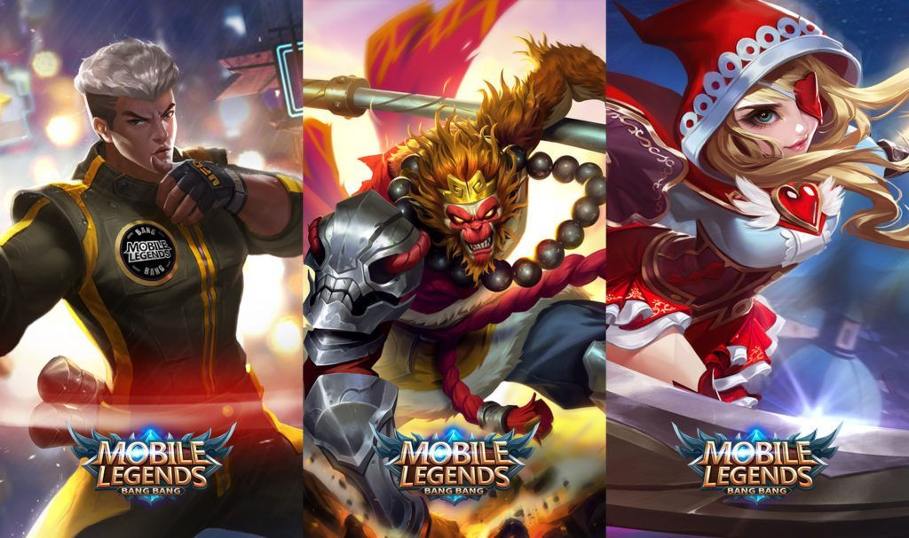
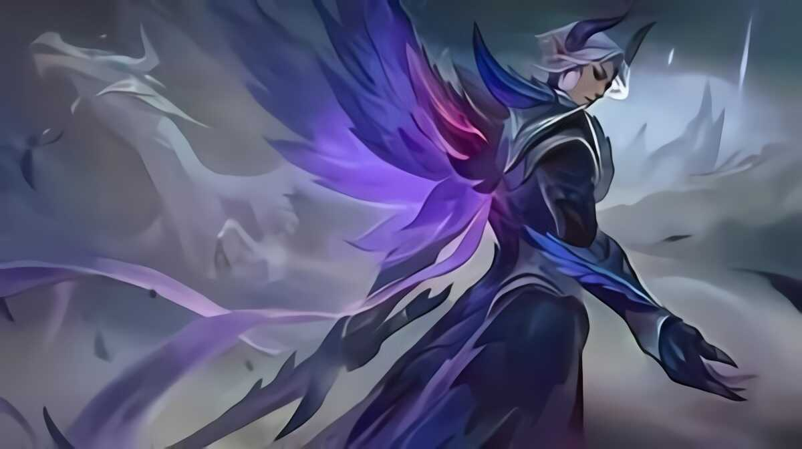
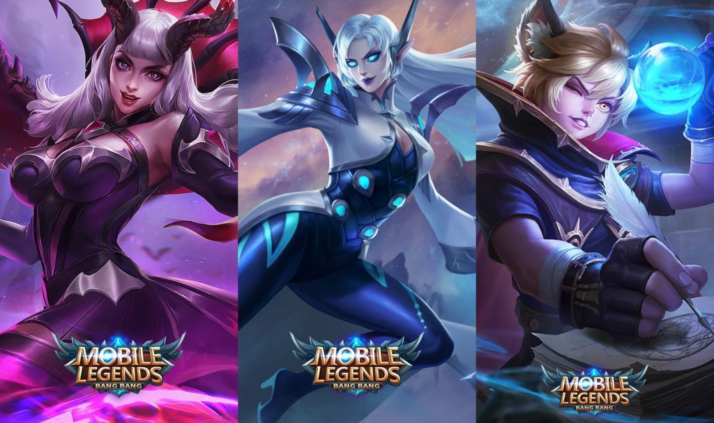
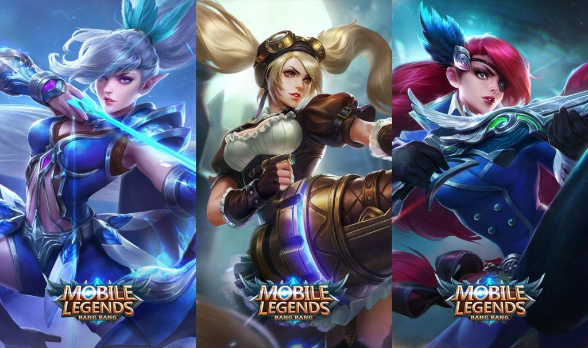
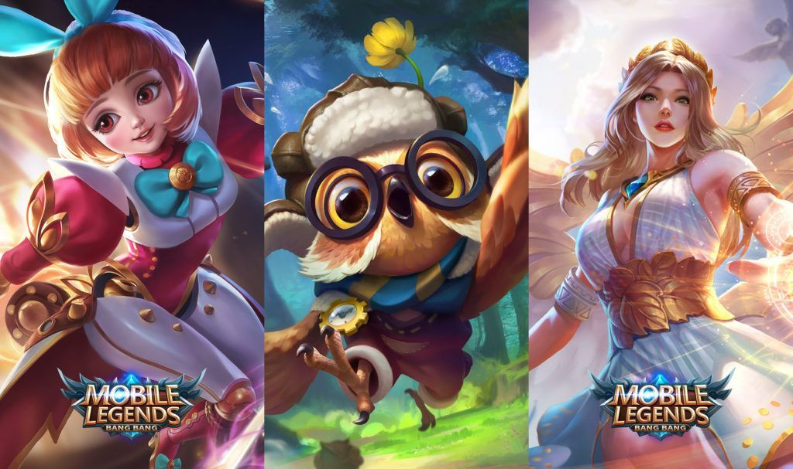

The very first step to Mobile Legends is to find your role. Learning what position that suits your playing style would not only make benefits but also make the game more fun and entertaining
There are six classes of Mobile Legend — Tank, Fighter, Assassin, Mage, Support, and Marksman. Every class is different or unique, and each postition plays an important role and specialty on a teams.
Tanks are the shield of the group. These legends have high health points focuses (HP) and high defense. With their strength, tanks separate enemy groups and help retain damage. On the off chance that you appreciate being at the front, absorbing huge loads of damage, and want to risk your life to br able to save your teammates, at that point the tank role is made for you.
Fighters are the brawlers of the group.These heroes have a decent harmony between HP, damage and defense. Their fair attributes allows these heroes to get in and escape battles alive. It likewise encourages tank to continued battle with the foe. If you love to be in the main part of the battle field in constantly, being a Fighter suits best for you.
Assassins are the killer machine of the team. They have low HP but can deal massive damage to the enemy, it roams arounf the map to hunt and ambush enemies in lane. If you like being sneaky and taking down enemies, the assassin role is made for you.
Mages are long-range damage dealers with strong abilities. These heroes have high mana and low defense, relying on their powerful spells with a wide area of damage to burst enemy down and control team fights. 
Marksmenare the saviour of the team. These heroes have high continuous damage to take down enemy but low defensive stats and mobility. Marksmen hide at the back during team fights to be able to deal more damage to the enemy team. If you love dealing damage and killing heroes with long range, being a marksman is the way to go.
Supports are the backbone of the team. They have high mana like mages and decent hp and defense like Tanks. Their spells are the key factor that helps every member of the team continue fighting. If you prefer being the one who want to do all the best to help your team, then being a support is best for you.
After picking the best role and hero that suits you best, the next step to improving is mastering your hero.
Every hero’s skills need to synchronize with each other in specific ways. Being familiar with your hero’s skills brings out the hero’s full potential and will helps your team win the battle.
Playing the hero properly also allows you to fulfill your role in your team and a key point to achieve victory.
Every hero has four skills. Three of them are active skills or skills that you can cast to buffs/escape/crowdcontrol/takedown your enemy. To activate them, you just need to click the right button. One of them is a passive skill. This skill activates automatically once certain conditions are met. But as I said you need to think wisely to use your skills at right time because it has cooldown which mean you can't use same skill at the same time. So proper skill management is essential.
In-game, active skills are circular buttons found at the bottom right hand corner of the screen. They are also ordered from bottom to top, with the hero’s most powerful skill (Ultimate) at the top.
There are 96 gears in Mobile Legends. Each is on its own category based on the gear type and function. There are five categories: Attack, Magic, Defense, Movement, and Jungle.
Players can choose which item to buy easily in Mobile Legends using the pre-made builds. You can see and use different PRO builds by choosing the Pro Build option and rely on their experience. The game will automatically bring up the items you need to buy in a match.